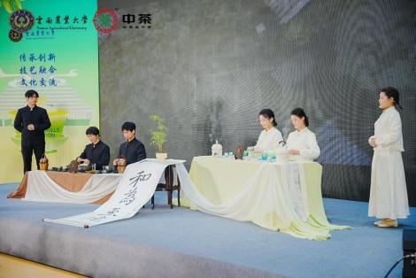
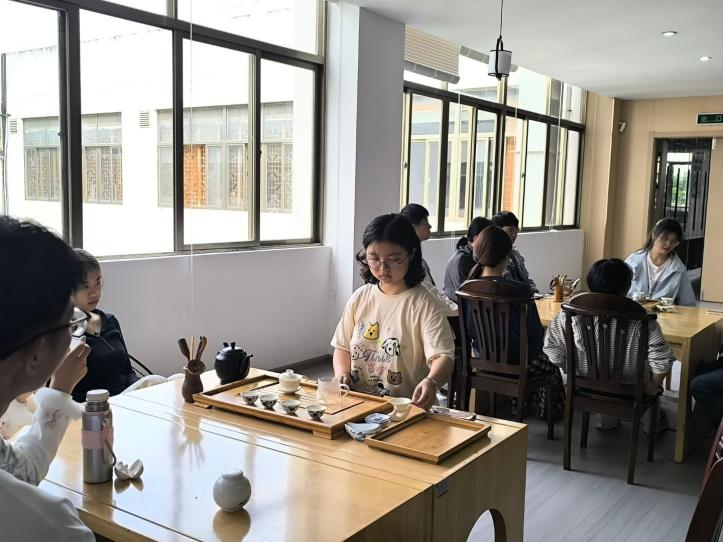
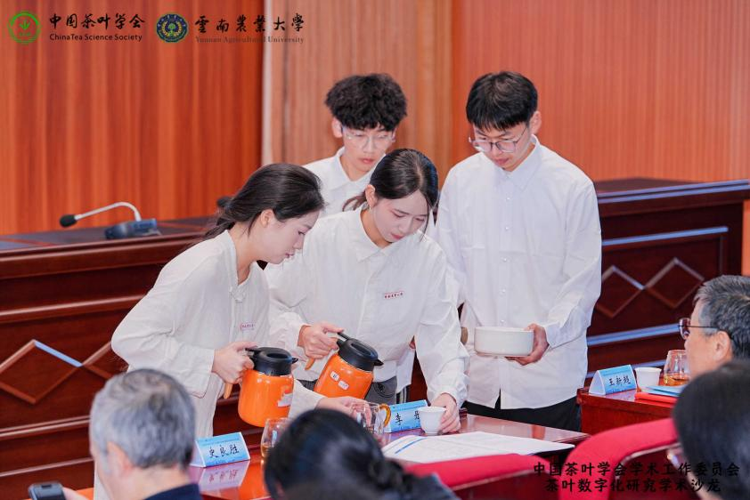
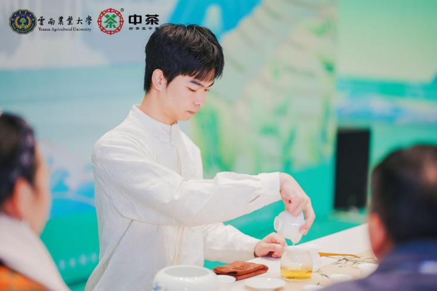
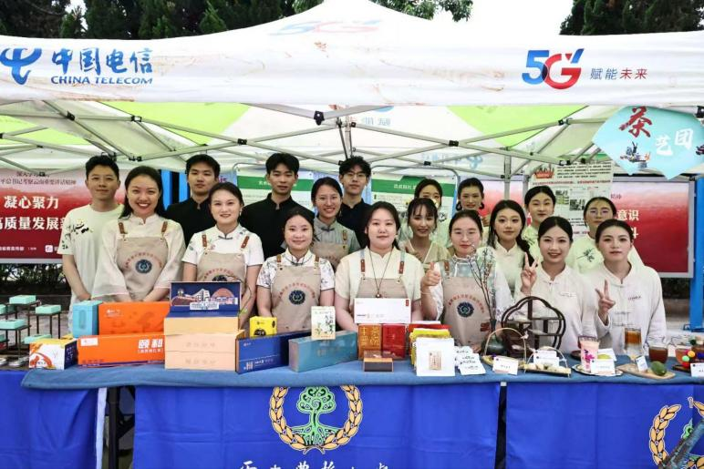
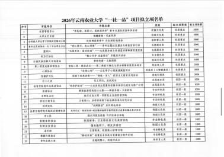
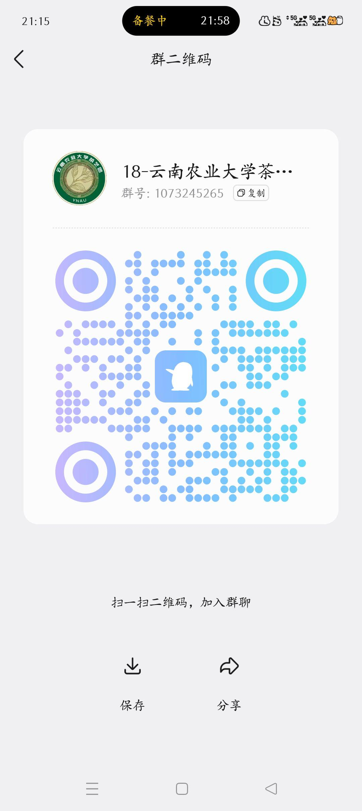

茶艺部
茶艺部专注研习各类茶品冲泡技艺，开展形体礼仪与茶文化学习，负责重要接待，是茶艺团行走的名片。
茶艺与礼仪

云南农业大学茶艺团依托学校茶学国家级一流本科专业的深厚积淀，是传承中华茶道精神、弘扬云南民族茶文化的核心学生团体，隶属于茶学院。
社团以“传承非遗文化，践行茶德精神”为宗旨，深耕“廉、美、和、敬”的茶德内涵，聚焦云南多元民族茶文化的挖掘与传播。社团设有茶艺部、统宣布、茶事部、茶友社、后勤部五大部门，日常开展茶艺技能教学，负责校内茶事接待。
茶艺团坚持以茶育人，将专业知识与茶道美学相结合，鼓励团员知行合一。在研习传统茶艺技艺的同时，立足云南地域特色，展示滇茶风采，推动民族茶文化创新传播，引导青年学子在习茶、悟茶的过程中修身自省，展现云农学子的责任与风采。
茶艺部专注研习各类茶品冲泡技艺，开展形体礼仪与茶文化学习，负责重要接待，是茶艺团行走的名片。
统宣部负责活动文案撰写与宣传推广，统筹部门，到梦空间发布活动和签到对外展示，打造特色宣传窗口。
茶事部负责新闻稿撰写、经费计算、活动规划等工作，保障各个活动的顺利进行。
后勤部负责物资采购、茶具整理、场地布置与后勤保障，配合各部门统筹物资，为茶艺展演、培训做好后勤支撑。
茶友社，以茶会友，传承茶文化，汇聚爱茶之士，开展学习交流，丰富校园生活。

2026 年 6 月茶艺技能培训依托茶学院专业资源，围绕基础冲泡、茶具使用、礼仪规范开展教学。带领学习传统茶艺与云南民族茶文化，让学员掌握实操技巧，体悟茶道内涵，为茶艺展示、交流接待打下扎实基础。

2025 年 11 月本次茶事接待由云南农业大学茶艺团承办，服务茶叶数字化研究学术沙龙。团队遵循茶艺礼仪，提供专业奉茶服务，展现云南茶文化风采。助力参会专家围绕茶叶数字化开展学术交流，推动传统茶文化与现代茶科技融合发展。

2025 年 12 月“中茶杯”全国大学生茶艺技能大赛是国家级高校茶艺专业赛事，汇聚全国涉茶高校学子同台竞技。赛事考察茶艺实操、创意编排与茶文化表达。茶艺团依托茶学院专业优势参与赛事，以茶艺实践传播云南民族茶文化。

2026 年 4 月耕读文化节产品展示依托茶学专业耕读实践成果，茶艺团带来云南特色茶品、茶文化创意展品、新式调饮进行展出。将耕读精神与茶道文化相融，展现滇茶风土韵味，传递勤耕善学、知行合一的耕读内涵。

荣获云南农业大学“一社一品”特色品牌社团称号，彰显茶艺团在传承茶文化方面的卓越成就。
